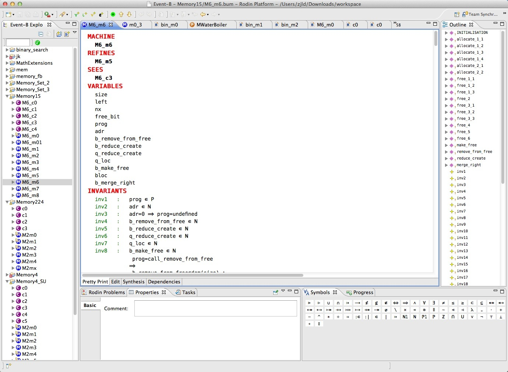
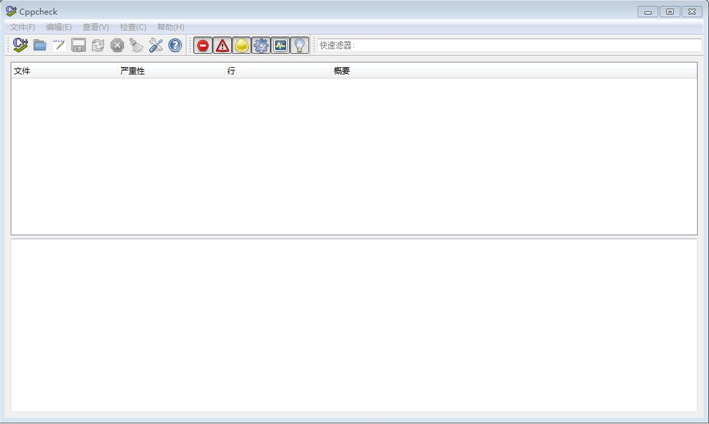

Rodin Event B - 实时建模工具
Event-B is a formal method for system-level modelling and analysis. Key features of Event-B are the use of set theory as a modelling notation, the use of refinement to represent systems at different abstraction levels and the use of mathematical proof to verify consistency between refinement levels.
Event B 在系统层面建模，并应用形式化方法进行分析。其主要的功能是，利用集合论作为建模符号，精细的区分系统不同层面的抽象，并运用数学的方法来证明系统不同层面细化的一致性。
The Rodin Platform is an Eclipse-based IDE for Event-B that provides effective support for refinement and mathematical proof. The platform is open source, contributes to the Eclipse framework and is further extendable with plugins.
Event-B and Rodin are used for industrial projects and research projects.
安装
需要Java 1.6
为Mac和Windows，提供编译好的二进制程序下载。为Linux提供源代码。
Source code: rodin-2.8.66956b4-sources.zip
Windows
下载Core Rodin Platform rodin-2.8-win32.win32.x86.zip
下载Core Rodin Platform rodin-2.8-win32.win32.x86_64.zip
解压后运行rodin文件夹下的rodin.exe程序
Mac
下载Core Rodin Platform rodin-2.8-macosx.cocoa.x86_64.zip
Linux
下载Core Rodin Platform rodin-2.8-linux.gtk.x86.zip
下载Core Rodin Platform rodin-2.8-linux.gtk.x86_64.zip
解压后运行rodin文件夹下的rodin程序
参考资料
A Concise Summary of the Event B mathematical toolkit
Rodin User's Handbook (Covers Rodin v.2.8)
工具截图

CAUT - 代码单元自动测试工具
CAUT is a DSE (dynamic symbolic execution)-based tool to automatically generate test data for C program at unit testing level.
CAUT (C Analysis and Unit Testing) 是一个以动态符号执行为基础的工具，在C程序单元测试级别自动生成测试数据。
安装
支持Mac和Linux，提供源代码下载。
Source code: GitHub CAUT-lib
$ git clone http://github.com/tingsu/caut-lib
Windows
不支持Windows平台
Linux
1. Before Build CAUT Install Ocaml 3.11
For Debian/Ubuntu user:
$ sudo apt-get install ocaml
2. Build the source code (or directly use caut library)
Note: If encountering some building errors, you can contact tsuletgo@gmail.com
1) (necessary for both usages) build c-ocaml-sqlite-lib, which is used to create an sqlite interface in Ocaml.
step1:
$ cd ./tools/c-ocaml-sqlite-lib
step2:
$ make clean
$ make
$ sudo make install
default lib directory : /usr/lib/ocaml, refer to ./tools/c-ocaml-sqlite-lib for details.
2) CAUT includes a modified version of CIL executable.
CIL source code is available at: http://kerneis.github.com/cil/doc/html/cil/. It is distributed under the revised BSD license. See cil/LICENSE for details.
3) It may need to export lpsolve library path in $(HOME)/.bashrc
like this:
$ export LD_LIBRARY_PATH=$LD_LIBRARY_PATH:/work/caut-lib/lpsolve
You should also export caut include path:
like this:
$ export C_INCLUDE_PATH=$C_INCLUDE_PATH:/work/caut-lib
参考资料
More Information: https://github.com/tingsu/caut-lib/blob/master/README
Another page: http://lab205.org/home/#!/caut
CppCheck - 代码分析工具
主页：http://cppcheck.sourceforge.net/
Cppcheck is a static analysis tool for C/C++ code. Unlike C/C++ compilers and many other analysis tools it does not detect syntax errors in the code. Cppcheck primarily detects the types of bugs that the compilers normally do not detect. The goal is to detect only real errors in the code (i.e. have zero false positives).
安装
支持Mac和Windows，提供编译好的二进制程序下载
Windows
下载安装包：cppcheck-1.67-x86-Setup.msi
Linux & Mac
1. 获取源码
git:
$ git clone git://github.com/danmar/cppcheck.git
svn:
$ svn checkout https://github.com/danmar/cppcheck/trunk
2. 编译
$ make
参考资料
CppCheck Manual (for 1.66)
CppCheck Design (2014)
CppCheck Design (2010)
工具截图

CBMC - 代码功能验证工具
主页：http://www.cprover.org/cbmc/
CBMC is a Bounded Model Checker for ANSI-C and C++ programs. It also supports SystemC using Scoot. It allows verifying array bounds (buffer overflows), pointer safety, exceptions and user-specified assertions. Furthermore, it can check ANSI-C and C++ for consistency with other languages, such as Verilog. The verification is performed by unwinding the loops in the program and passing the resulting equation to a decision procer.
安装
Support Windows, Linux and MacOS
Source code is available via svn:
$ svn co http://www.cprover.org/svn/cbmc/releases/cbmc-4.9
Windows
Command Line
Download cbmc-4-9-win.zip, and then unzip the archive. You will need to run CBMC from the Visual Studio Command Prompt. The free Visual C++ 2010 Express is sufficient.
Linux
If you have Debian Wheezy or later, or a recent Ubuntu distribution, then install the package cbmc with $ apt-get install cbmc
On Fedora 18 or 19, do $ yum install cbmc
32-bit Linux/i386: cbmc-4-9-linux-32.tgz
64-bit Linux/x64: cbmc-4-9-linux-64.tgz
Do $ tar xfz cbmc-4-9-linux-xx.tgz before running.
Mac
CBMC for MacOS (Intel 32 and 64 fat binary): cbmc-4-9.pkg
OS X 10.6 or higher is required. The binary is installed in /usr/bin. You need to have the Command Line Tools for Xcode, which can be downloaded here.
参考资料
Installation instructions for the Eclipse Plugin
Hardware Verification using ANSI-C Programs as a Reference
Behavioral Consistency of C and Verilog Programs Using Bounded Model Checking
A Tool for Checking ANSI-C Programs
工具截图

CPF - 代码量纲验证工具
主页：http://fsl.cs.illinois.edu/index.php/C_Policy_Framework
The C Policy Framework, or CPF, is a framework for rapidly developing analysis policies used for debugging and verification of C programs. Policies are developed using the Maude rewrite engine; parsing of C programs is performed mainly using a modified version of CIL, which is compiled using OCaml. Policies are differentiated by different policy tags; each policy has its own annotation language used to define specifications in annotations. Policies are actually checked using a policy-specific abstract semantics for C, which makes use of a large core of functionality shared across multiple policies.